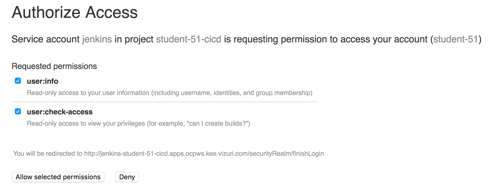

In this lab you will explore the tools utilized throught this workshop.
The following tools are utilized to create our Trusted Software Supply Chain.
OpenShift is the container orchestration platform that hosts oure Supply Chain Tools as well as our application deployments.
A) Navigate to the OpenShift Console: https://console-openshift-console.apps.ocpws.kee.vizuri.com 
student1 Password: workshop1! 
Note: Click on the Advanced button and click on the link: Proceed to ocpws.kee.vizuri.com (unsafe)
B) You have three projects pre-created for you (Under Home -> Projects on the left)
cicd-student1 - Tools needed for Trusted Supply Chain
dev-student1 - Development Project
stage-student1 - Staging Project
Note: Your codeready workspace will not appear until you complete the Codeready Steps Below.

Jenkins provides the platform to execute oure Trusted Software Supply Chain CI/CD Pipelines.
A) Confirm you can log into your jenkins console: https://jenkins-cicd-student1.apps.ocpws.kee.vizuri.com 
When prompted Select 'Log in with OpenShift'
student1 Password: workshop1! 
Note: Click on the Allow selected permissions button the first time:

B) Should see the message:

Nexus is an artifact repository that stores versioned build artifacts. It is utilized to store the WAR archieve in our Trusted Software Supply Chain.
A) Confirm you can navigate to nexus: http://nexus-cicd-student1.apps.ocpws.kee.vizuri.com 
B) Should see the message:

Quay is an Enterprise Container Registry. It is utilized to store and scan container images in our Trusted Software Supply Chain.
A) Confirm you can log into the Quay Container Registry: https://quay.apps.ocpws.kee.vizuri.com/repository 
student1 Password: workshop1! 
Note: Click on the Advanced button and click on the link: Proceed to quay.apps.ocpws.kee.vizuri.com (unsafe)
Note: If asked, you may have to confirm your username. So please click on the Confirm Username button when prompted

SonarQube is a static code analyzer that is utilized to identify issues code issues in our Trusted Software Supply Chain.
A) Confirm you can log into the sonarqube console: http://sonarqube-cicd-student1.apps.ocpws.kee.vizuri.com 
admin Password: admin
Note: If you are prompted to enter a token just click on Skip this tutorial in the top right.

B) Should see the page:

Gogs is a contaierized git repository. It provides the code repository for our Trusted Software Supply Chain.
A) Confirm you can log into the gogs git server: http://gogs.apps.ocpws.kee.vizuri.com 
Click the 'Sign In' Button.
student1 workshop1! B) You have one repository that we will use for the labs:

Codeready workspaces is a container based development environemtn. It is utilized to develop the pipelines for the Trusted Software Supply Chain.
A) Confirm you can log into Code Ready Workspaces: http://codeready-codeready.apps.ocpws.kee.vizuri.com 
student1 Password: workshop1! 
Note: Click on the Allow selected permissions button the first time:

Note: Update Account Information the first time. You can provide any email, first name and last name you would like:
"
B) Should see the page:

C) Create Your Workshop Workspace
Choose the 'Java Spring Boot Workshop' Template and Click on 'Create and Open' to launch your Workshop Workspace.

It will take a few minutes, but once your workspace has been created you should see this screen.

Click on the Explorer Icon in the left navigation of the workspace.

This will open the Explorer Window. Verify you have the openshift-tasks project in your workspace. This is the project you will working on to build your Trusted Software Supply Chain.